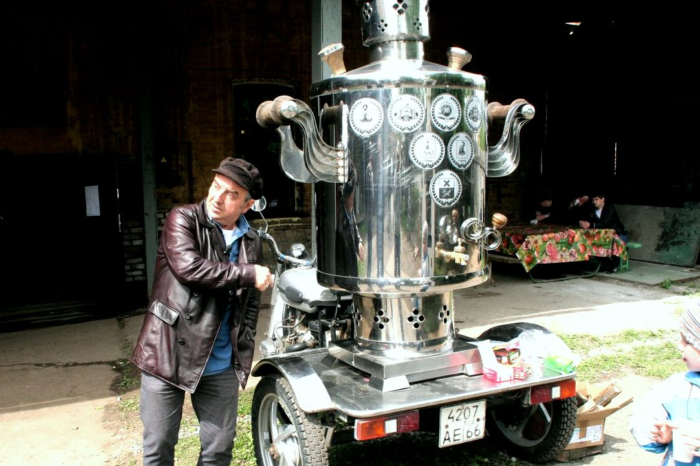

Фитинги
---Светильники светодиодные
---Программное обеспечение
------
---
---
Центрифуги
------
---
Кресло оператора
---Кресла для ж/д вагонов
------
---
Полки для ж/д вагонов
------
---
---
Плацкартные вагоны:
Полка для инвалида
Оборудование вагонов
------
---
---
---
---
---
---
Кресла ж/д (архив)
------
---
---
---
Вагон-ресторан (архив)
------
---
---
---
---
Фитинги
---Прайс-лист (Скачать)
Продукция ПАО «ППНД»
Предприятие самостоятельно, силами специального конструкторского бюро, ведет
разработки изделий,
проводит их комплексные испытания в лабораториях предприятия, а также в отраслевых институтах. При
производстве продукции осуществляется строжайший контроль качества. Вся продукция сертифицирована.
Долговременная стратегия предприятия нацелена на поиск заказов сложной продукции, позволяющей
использовать в полном объеме весь потенциал предприятия.
Одно из направлений деятельности предприятия – производство оборудования для железнодорожных
пассажирских вагонов. Избирая для себя такой профиль производственной деятельности, предприятие исходило
из оценки долгосрочной перспективы развития в России собственного производства пассажирских вагонов.
Кресла пассажирские одноместные 1-го класса на двух турбоускорителях
Возможности конструкторского бюро и производственной базы позволили в
кратчайшие сроки разработать по
исходным требованиям ВНИИЖТ и наладить выпуск оборудования для пассажирских вагонов и электропоездов
межобластного сообщения, качество которого подтверждено результатами испытаний и имеет сертификаты РС
ФЖТ.
Наиболее крупными потребителями оборудования железнодорожных вагонов являются Тверской
вагоностроительный и Демиховский машиностроительный заводы. Новые электропоезда и пассажирские поезда
повышенной комфортности, построенные на этих предприятиях, заслужили высокую оценку пассажиров.

Мото-кипятильник комбинированный непрерывного действия
В настоящее время изделия для железнодорожных вагонов производства ПАО «ППНД»
пользуются постоянным спросом практически у всех вагоноремонтных российских предприятий. География
поставок железнодорожной продукции давно вышла за границы России. Сегодня мы тесно сотрудничаем с
предприятиями Казахстана, Белоруссии, Украины; активно развиваем производственные связи со
странами
среднеазиатского и прибалтийского регионов, Польшей.
ПАО «ППНД» выпускает более 200 наименований изделий для железнодорожных вагонов, в том числе:
- спальные, багажные полки; полки для людей с ограниченными возможностями;
- одно-, двухместные кресла повышенной комфортности 1-го класса;
- одно-, двух-, трехместные кресла повышенной комфортности 2-го класса;
- сиденья для служебных помещений вагонов;
- кипятильники электрические и комбинированные;
- межвагонные высоковольтные и низковольтные соединения;
- оборудование вагона-ресторана;
- вентиляторы.